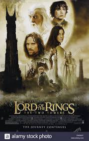
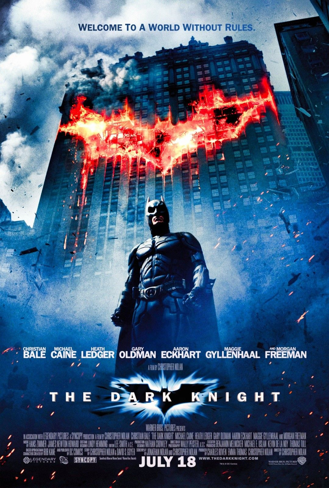
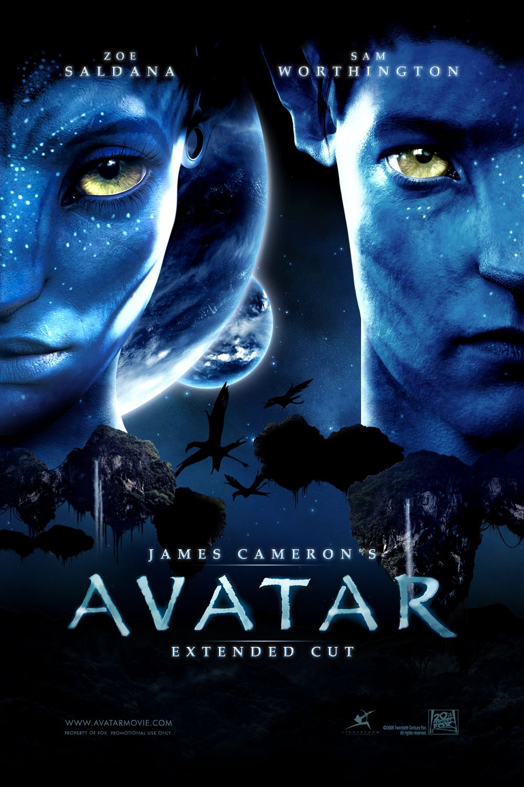
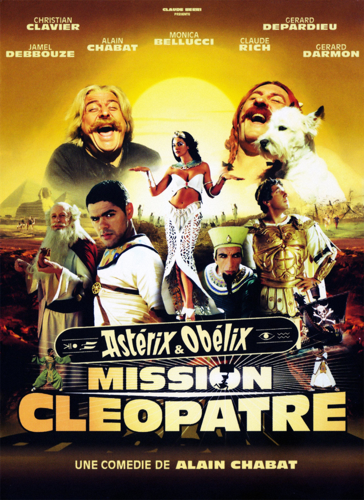

Les années 2000 furent pour nous la découverte du monde mais aussi notre enrichissement culturel.
C’est également une décennie charnière dans la diffusion des informations à travers le monde, notamment grâce à l’explosion de l’utilisation d’internet.
Mais aussi avec l’absence d’un genre culturel bien précis permettant la libre expression d’une créativité nouvelle et non catégorisée.
Cinéma
Au niveau international
La trilogie du seigneur des anneaux

Pour moi l’événement cinématographique de la décennie est attribué à la trilogie fantasy du seigneur des anneaux, basée sur le roman du même nom
en 3 volumes de JRR Tolkien.
C’est l’un des projets le plus ambitieux de l’histoire de l’industrie cinématographique, cette trilogie est réalisée par Peter Jackson,
pour un budget de 285 millions de dollars, avec un projet durant sur 8 ans dont 2 ans de tournage.
Il se concrétisa par 3 films La communauté de l’anneau sortie en 2001, Les deux tours sortie l’année suivante et se concluant
par Le retour du roi en 2003.
Batman The dark knight

Suite de Batman Begins sortie en 2005. Batman The dark knight est le deuxiéme film d'une trilogie conclut en 2012 par
The dark knight rises. Réalisé par Christopher Nolan et sortie en 2008, il fût le plus gros succès de 2008. Franchissant la barre du milliard de recette et
sixième film de l'histoire à réaliser cet exploit.
Avatar

Sortie en 2009 et réalisé par James Cameron Avatar est l'un des films les plus coûteux de l'histoire du cinéma. Cinquième films à dépasser le milliard de dollars de recettes
et le premier à dépasser les 2 milliards, après 6 semaines d'exploitations il devient le plus gros succès de l'histoire cinématographique. Détroné
seulement récement par Avengers: Endgame mettant fin aux 10 ans de règne d'Avatar à sa première place.
Série d'animation de la société Blue sky studios comprenant actuellement 5 films et réalisé par Chris Wedge et Carlos Saldanha. Durant cette décénnie 3 films sont
sorties en 2002, 2006 et 2009. Cette série d'animation est devenue culte chez la jeune génération.
La-haut
Film issu de la coopération des studios Pixars et Walt disney pictures. Sortie en 2009 et réalisé par Pete Docter et Bob Peterson, c'est le
dixième long métrage des studios Pixar. Il fût le premier film d'animation de l'histoire à ouvrir le festival de Cannes. Il remporta 731 millions
de dollards de recettes et connût un grand succès chez la critique et le public.
Le voyage de chihiro
Film d'animation japonais des studios Ghibli et réalisé par Hayao Miyazaki et sortie en 2001.Plus grand succès du cinéma japonais avec
274 millions de dollards de recettes. Acclamé par les différentes critiques et il fût considéré comme l'un des meilleurs de l'année 2000.
Sortie en 2008 et réalisé par Dany Boon. Etant son second long métrage Bienvenue chez les Ch'tis fût contre toute attente un immense succès
devenant le deuxième film enregistrant le plus d'entrée en France juste derrière Titanic.
Astérix et Obélix : mission Cléopâtre

Réalisé par Alain Chabat, ce film est sorti en 2002. Il est l'adaptation de la BD de 1963 de Astérix et Cléopâtre de Goscinny et Uderzo. Se placant en quatrième
position du box-office francais en 2002 avec ses 14 millions d'entrées.
Mise à part le mouvement éphémère de la tecktonik, cette décennie est marquée par la libre créativité du fait de l’absence d’un genre musicaux
bien précis dans l’industrie musicale internationnale.
Ce fût le stade accueillant la cérémonie d'ouverture et de cloture ainsi que l'hôte de différentes épreuves des JO de Pékin de 2008.
Les travaux commancant en 2003, pouvant accueillir près de 90 000 personnes pour une surface de 258 000 mètres carrés et un coût de 325 millions d'euros.
Ce stade au designe atypique fût le symbole d'un pays dans ces JO.
La mort de Michael Jackson
Icône de la pop et symbole d'une génération, c'est à l'âge de 50 ans, le 25 août 2009 qu'il nous a quitté. Laissant derrière lui des
générations entières en deuil.
La saga Harry Potter
Au niveau littéraire l'oeuvre majeure fantansy de cette décénnie fût sans aucun doute avec Le seigneur des anneaux la saga Harry Potter. La célèbre école des
sorciers avec Harry Potter, écrite par J.K Rowling Harry Potter fût un phénomène culturel.
Lors de la finale de la coupe du monde de football se déroulant à Berlin le 9 juillet 2006 opposant l'Italie à la France. Ce geste invraisemblable
eût lieu, le coup de tête de Zidanne envers Marco Materazzi, un geste unique et un souvenir grâvé à jamais pour une génération entière.
Avancé majeure dans les moyens de communications et de recherche. Internet prend depuis cette décénnie une part très importante de notre vie.
Le lancement de wikipédia
Officiellement lancé en 2001 wikipédia devînt rapidement l'encyclopédie de référence en matière de recherches sur Internet. Dépassant
et remplacant l'ancien projet semblable qu'était Nupédia.
La révolution vidéo
Avec l'apparition de dailymotion et de youtube en 2005. Une révolution vidéo s'oppera grâce à l'hébergement, le partage et le visionnage rapide
et facile de contenus vidéos en ligne. Une nouvelle facon de découvrir des choses vût le jour.
La naissance des réseaux sociaux
Avec la naissance de Twitter et de Facebook respectivement en 2006 et 2004, un nouveau phénomène de société émergea doucement mais surement
l'avenement des réseaux sociaux omniprésent actuellement dans nos sociétés.